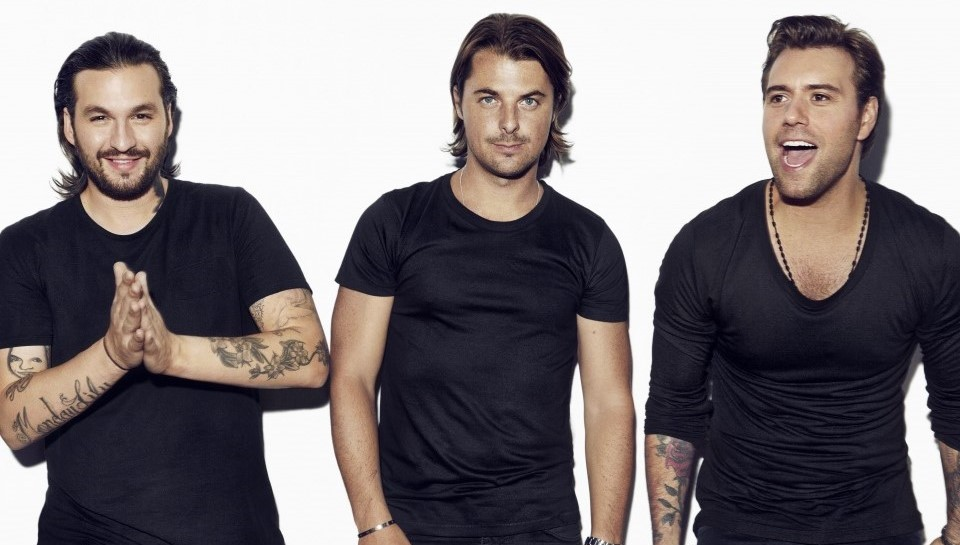

YourBeat.com
 Tim Bergling, "Avicii", el reconocido DJ sueco que revolucionó con su mezcla de sonidos la industria musical de la última década, murió el viernes 20 de Abril en Omán en circunstancias hasta ahora no aclaradas.
Tim Bergling, "Avicii", el reconocido DJ sueco que revolucionó con su mezcla de sonidos la industria musical de la última década, murió el viernes 20 de Abril en Omán en circunstancias hasta ahora no aclaradas. Con solo 28 años, se libró por solo unos meses de ser encasillado en el trágico Club de los 27, como es conocido popularmente el grupo de artistas que murieron a esa edad, como Jimi Hendrix, Janis Joplin, Jim Morrison o Kurt Cobain. Leer más

Tras su seperacion como grupo a finales de 2012. El grupo sueco Swedish House Mafia volvío, solo por una noche, para el 20 aniversario del festival Miami Ultra Music Festival, con una actuación mágica que emocionó a millones de fans y seguidores de la música electronica. Despues de su actuacion en UMF Miami hay rumores, que van creciendo conforme van pasando los dias, de la vuelta oficial del grupo sueco.Leer más Nacido en Amsterdam en 2000, Sensation se celebra en 35 países del mundo y mueve a millones de personas. El espectáculo Rise se estrenó en Sao Paulo, Brasil, el pasado 31 de marzo y recorrerá 4 continentes y 35 países del mundo.
Nacido en Amsterdam en 2000, Sensation se celebra en 35 países del mundo y mueve a millones de personas. El espectáculo Rise se estrenó en Sao Paulo, Brasil, el pasado 31 de marzo y recorrerá 4 continentes y 35 países del mundo. La espectacularidad de los escenarios, el sonido o la iluminación son uno de los mayores atractivos para los asistentes. Desde hace años, Sensation se ha convertido en un fenómeno mundial y este 2018 aterrizará en Madrid.Leer más
 Después de un recorrido por el mundo del EDM, el rey y leyenda del Hardstyle vuelve a sus orígenes, logrando cautivar a millones de sus seguidores all rededor del mundo.
Después de un recorrido por el mundo del EDM, el rey y leyenda del Hardstyle vuelve a sus orígenes, logrando cautivar a millones de sus seguidores all rededor del mundo. Con un motivador mensaje es como Headhunterz regresa a casa después de experimentar por unos años nuevos sonidos en el mundo “comercial”, y hasta volverse una clase de blogger con sus videos en Youtube, pero después de ser invitado el año pasado a Defqon.1 Legends, el holandés fue tocado en el corazón por sus fans, y ha decidido que su verdadera casa está en la música Hard. Leer más
 El inicio del verano significa tambien el inicio de la temporada de festivales.
El inicio del verano significa tambien el inicio de la temporada de festivales.Entradas agotadas, hoteles completos y miles de movilizaciones para poder vivir una experiencia inolvidable con amigos. A Summer Story como en estos tres ultimos años será el primero en iniciar la temporada de festivales de musica electrónica.Leer más